SECCIÓN 2D
SUSPENSIÓN TRASERA
Precaución: Desconecte el cable negativo de la batería antes de quitar o instalar cualquier unidad eléctrica o cuando algún equipo o herramienta puedan hacer contacto fácilmente con las terminales eléctricas expuestas. Desconectar este cable ayuda a evitar lesiones personales y daños al vehículo. El encendido también debe estar en la posición LOCK, a menos que se indique lo contrario.
ESPECIFICACIONES
Especificaciones para el apriete del afianzador
| Aplicación | N•m | Lb-pies | Lb-pulg. |
| Tornillos de travesaño a carrocería | 112 | 83 | - |
| Tuerca de amortiguador de montante a montaje de montante | 75 | 55 | - |
| Tornillo del acoplamiento paralelo trasero a travesaño | 90 | 66 | - |
| Tornillo de acoplamiento paralelo delantero a rótula | 120 | 89 | - |
| Tornillo de la protección de la manguera de llenado de combustible | 20 | 15 | - |
| Tuercas de rótula a conjunto de montante | 100 | 74 | - |
| Tornillo de acoplamiento paralelo a rótula | 90 | 66 | - |
| Tuerca del acoplamiento de salida trasero a soporte de acoplamiento de salida | 100 | 74 | - |
| Tuerca del acoplamiento de salida trasero a rótula | 150 | 111 | - |
| Tuerca de acoplamiento estabilizador a conjunto de montante | 47 | 35 | - |
| Tornillos de la abrazadera del árbol estabilizador | 40 | 30 | - |
| Tuerca de árbol estabilizador al acoplamiento estabilizador | 47 | 35 | - |
| Tuercas del montaje de montante a carrocería | 30 | 22 | - |
| Tornillos del soporte de acoplamiento de salida a carrocería | 70 | 52 | - |
| Tuerca del acoplamiento de salida a soporte de acoplamiento de salida | 100 | 74 | - |
| Tornillos del conjunto de buje trasero | 65 | 48 | - |
HERRAMIENTAS ESPECIALES
Tabla de herramientas especiales
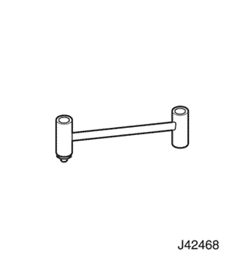
 
| J-42468 Llave de tuercas de montaje del montante delantero . |
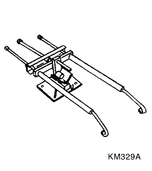
| KM-329-A Compresor de muelles |
DIAGNÓSTICO
Comprobación de fricción excesiva
Comprobar la fricción excesiva en la suspensión trasera de la siguiente manera:
- Con un ayudante, levantar el vehículo del parachoques trasero, tan alto como sea posible. Soltar lentamente el parachoques y dejar que el coche asuma su altura normal.
- Medir la distancia desde el piso al centro del parachoques.
- Presionar hacia abajo el parachoques y soltar lentamente para dejar que el coche asuma su altura normal.
- Medir la distancia desde el piso al centro del parachoques.
La diferencia entre las dos mediciones debe ser menor de 12,7 mm (0,50 pulg.). Si la diferencia es mayor a este límite, inspeccionar los brazos de control para detectar desgaste o daños.
Amortiguador de montante
Un amortiguador de montante es básicamente un amortiguador normal. Sin embargo, los amortiguadores de montante se extienden y retraen más fácilmente con la mano que los amortiguadores normales.
Los montantes parecen débiles
| Controles | Medida |
| Comprobar la presión de los neumáticos. | Ajustar la presión de los neumáticos a las especificaciones indicadas en la placa de información de los neumáticos. |
| Comprobar las condiciones de carga bajo las que se conduce normalmente el vehículo. | Consultar con el propietario para confirmar si comprende las condiciones normales de carga. |
| Comprobar la compresión y la efectividad de rebote del amortiguador de montante. | Empujar rápidamente hacia abajo y luego levantar la esquina del parachoques más cercano al amortiguador de montante que se está comprobando. Comparar la compresión y el rebote con los de un vehículo similar que tenga una calidad de marcha aceptable. De ser necesario, reemplazar el amortiguador de montante. |
Los montantes hacen ruido
| Controles | Medida |
| Comprobar si los montajes están flojos o dañados. | Apretar el amortiguador de montante. De ser necesario, reemplazar el amortiguador de montante. |
| Comprobar la compresión y la efectividad de rebote del amortiguador de montante. | Empujar rápidamente hacia abajo y luego levantar la esquina del parachoques más cercano al amortiguador de montante que se está comprobando. Comparar la compresión y el rebote con los de un vehículo similar que tenga una calidad de marcha aceptable. De ser necesario, reemplazar el amortiguador de montante. |
Fugas
| Controles | Medida |
| Comprobar si hay algún rastro de fluido. | El amortiguador de montante está bien. |
| Comprobar la cubierta del sello con el montante completamente extendido. | Reemplazar el amortiguador de montante |
| Comprobar si hay una cantidad excesiva de fluido en el amortiguador de montante. | Reemplazar el amortiguador de montante |
LOCALIZADOR DE COMPONENTES
Suspensión trasera
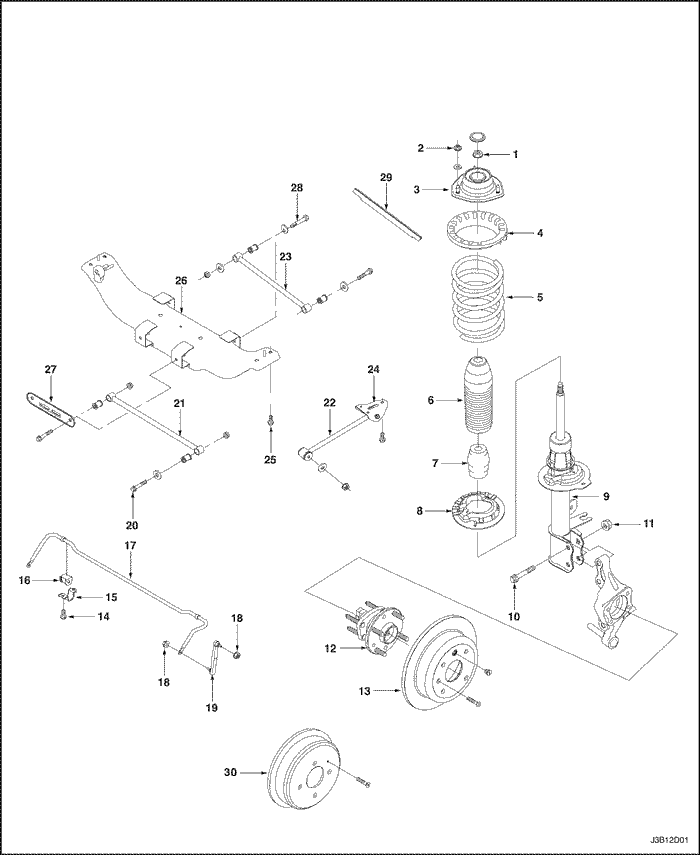
- Tuerca de bloqueo del montaje de montante
- Tuerca de conjunto de montante a carrocería
- Montaje del montante
- Asiento superior del muelle
- Muelle trasero
- Cubrepolvo del amortiguador de montante
- Tope hueco
- Anillo inferior de aislamiento de muelle
- Amortiguador de montante trasero
- Tornillo del conjunto de montante a rótula
- Tuerca del conjunto de montante a rótula
- Conjunto de pivote
- Disco de freno
- Tornillo de abrazadera del árbol estabilizador
- Abrazadera del árbol estabilizador
- Aislador del árbol estabilizador
- Árbol estabilizador
- Tuerca de árbol estabilizador al acoplamiento estabilizador
- Acoplamiento estabilizador
- Tornillo de acoplamiento paralelo a rótula
- Acoplamiento paralelo trasero
- Acoplamiento de salida
- Acoplamiento paralelo delantero
- Soporte de acoplamiento de salida
- Tornillos de travesaño trasero a carrocería
- Travesaño trasero
- Cubierta de travesaño trasero
- Tornillo de ajuste de divergencia
- Cubierta de cableado de ABS
- Tambor trasero
MANTENIMIENTO Y REPARACIÓN
SERVICIO EN EL VEHÍCULO
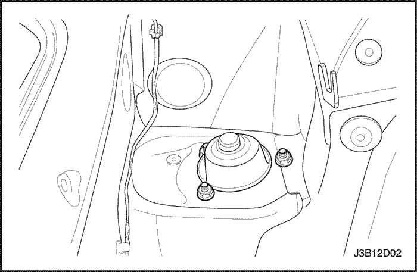
Conjunto de montante
Procedimiento de extracción
- Retirar la alfombra del maletero que cubre las tuercas de montaje del montante trasero. Para vagonetas, retirar los paneles que cubren el adorno del panel de neumático de reserva en el compartimiento de equipaje. Ver Sección 9G, Acabado interior.
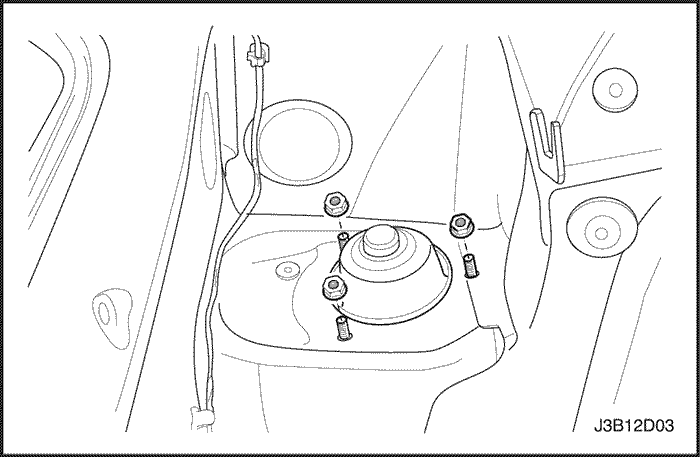
- Retirar las tuercas de montaje del montante trasero.
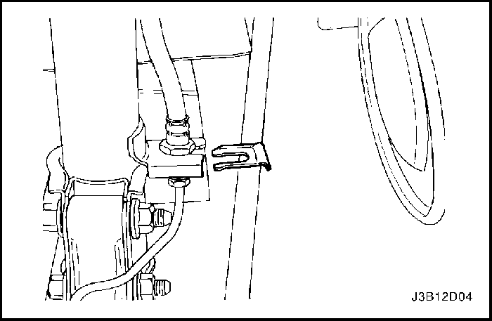
- Izar y soportar adecuadamente el vehículo.
- Retirar la rueda. Ver la Sección 2E, Neumáticos y ruedas.
- Desmontar el freno de estacionamiento. Ver Sección 4G, Freno de estacionamiento.
Importante: En vehículos equipados con frenos traseros de tambor, la manguera de freno se desconecta fácilmente del conjunto de montante mientras se extrae el conjunto del vehículo. En vehículos equipados con frenos traseros de disco, la manguera de freno se puede desconectar en cualquier momento del conjunto de montante.
- Retirar el sujetador que sostiene la manguera de freno al conjunto de montante.
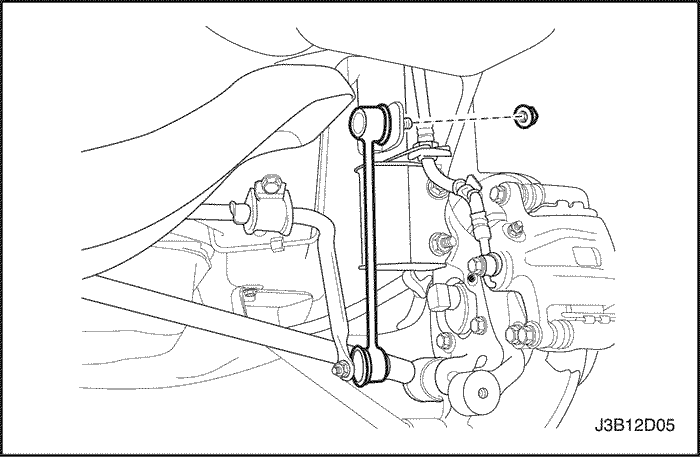
- Retirar la tuerca del acoplamiento estabilizador a conjunto de montante y desmontar el acoplamiento estabilizador del conjunto de montante.
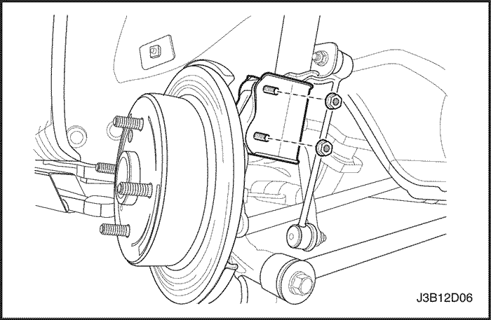
- Retirar las tuercas y tornillos de la rótula a conjunto de montante.
- En vehículos equipados con frenos traseros de tambor, bajar el conjunto de montante y separar la línea de freno del conjunto de montante.
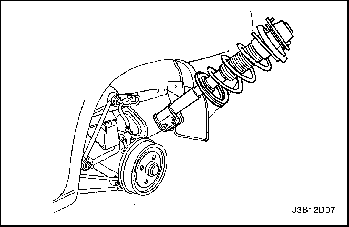
- Retirar el conjunto de montante trasero del vehículo.
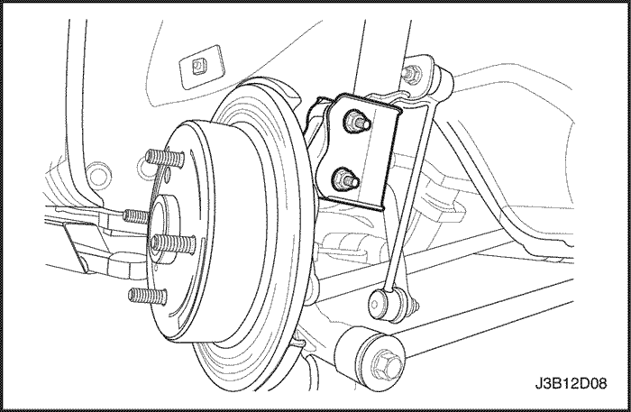
Procedimiento de instalación
Importante: En vehículos equipados con frenos traseros de tambor, la manguera de freno se conecta fácilmente al conjunto de montante mientras se instala el conjunto en el vehículo. En vehículos equipados con frenos traseros de disco, la manguera de freno se puede conectar al conjunto de montante en cualquier momento después de haber instalado el conjunto de montante en el vehículo.
- Instalar el conjunto de montante trasero en el vehículo. En vehículos equipados con frenos traseros de tambor, asegure la línea de freno en el sujetador mientras se coloca el conjunto en su lugar.
- Asegurar el conjunto de montante, colocando sin apretar, las tuercas de montaje de montante a carrocería.
- Instalar los tornillos y tuercas de rótula a conjunto de montante. No apretar.
- Instalar el sujetador que sostiene la manguera de freno al conjunto de montante.
Apretar
Apretar las tuercas de rótula a conjunto de montante a 100 N•m (74 lb-pie).
- Montar el acoplamiento estabilizador al conjunto de montante e instalar la tuerca de acoplamiento estabilizador a conjunto de montante.
Apretar
Apretar la tuerca de acoplamiento estabilizador a conjunto de montante a 47 N•m (35 lb-pie).
- Montar el freno de estacionamiento. Ver Sección 4G, Freno de estacionamiento.
- Instalar la rueda. Ver la Sección 2E, Neumáticos y ruedas.
- Descender el vehículo.
Apretar
Apretar las tuercas de montaje de montante a carrocería a 30 N•m (22 lb-pie).
- Instalar la alfombra del maletero que cubre las tuercas de montaje del montante trasero. Para vagonetas, retirar los paneles que cubren el adorno del panel de neumático de reserva en el compartimiento de equipaje. Ver Sección 9G, Acabado interior.
Conjunto de rótula
Procedimiento de extracción
- Izar y soportar adecuadamente el vehículo.
- Retirar la rueda. Ver la Sección 2E, Neumáticos y ruedas.
- En vehículos equipados con sistema antibloqueo de frenos, retirar el sensor de velocidad del ABS. Ver Sección 4F, Sistema de frenos antibloqueo.
- En vehículos equipados con frenos traseros de disco, retirar la pinza del freno trasero del conjunto de rótula. Ver la Sección 4E1, Frenos traseros de disco.
- Desmontar el freno de estacionamiento del conjunto de rótula. Ver Sección 4G, Freno de estacionamiento.
- Desmontar el acoplamiento paralelo delantero de la rótula. Ver "Acoplamiento paralelo delantero" en esta sección.
- Desmontar el acoplamiento paralelo trasero de la rótula. Ver "Acoplamiento paralelo trasero" en esta sección.
- Desmontar el acoplamiento de salida de la rótula trasera. Ver "Acoplamiento de salida trasero" en esta sección.
- En vehículos equipados con frenos traseros de tambor, retirar el sujetador que asegura la línea de freno al conjunto de montante.
- En vehículos equipados con frenos traseros de tambor, retirar la línea de freno del conjunto de rótula. Ver Sección 4E2, Frenos traseros de tambor.
- Retirar las tuercas y tornillos de la rótula trasera a conjunto de montante.
- Desmontar la línea de freno del conjunto de montante y quitar la rótula trasera del conjunto de montante.
Procedimiento de instalación
- Instalar la rótula trasera en el vehículo e instalar la línea de freno en el soporte del conjunto de montante.
- Instalar los tornillos y tuercas de rótula a conjunto de montante. No apretar.
- Instalar el sujetador que asegura la línea de freno al conjunto de montante.
- Apretar las tuercas de rótula a conjunto de montante.
Apretar
Apretar las tuercas de rótula a conjunto de montante a 100 N•m (74 lb-pie).
- Montar el acoplamiento de salida trasero en la rótula trasera. Ver "Acoplamiento de salida trasero" en esta sección.
- Montar el acoplamiento paralelo trasero en la rótula. Ver "Acoplamiento paralelo trasero" en esta sección.
- Montar el acoplamiento paralelo delantero en la rótula. Ver "Acoplamiento paralelo delantero" en esta sección.
- Montar el freno de estacionamiento al conjunto de rótula. Ver Sección 4G, Freno de estacionamiento.
- En vehículos equipados con frenos traseros de tambor, conectar la línea de freno al conjunto de rótula. En vehículos equipados con frenos traseros de disco, instalar la pinza del freno trasero en el conjunto de rótula. Ver la Sección 4E1, Frenos traseros de disco.
- En vehículos equipados con sistema antibloqueo de frenos, instalar el sensor de velocidad del ABS. Ver Sección 4F, Sistema de frenos antibloqueo.
- Instalar la rueda. Ver la Sección 2E, Neumáticos y ruedas.
- Descender el vehículo.
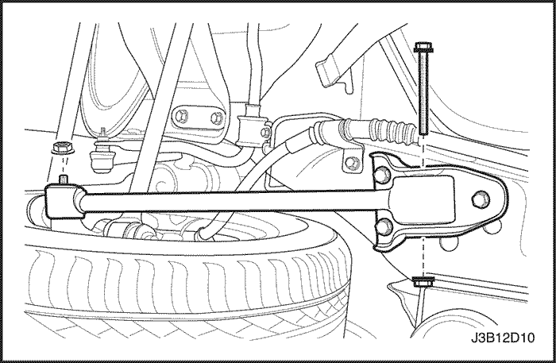
Acoplamiento de salida
Procedimiento de extracción
- Izar y soportar adecuadamente el vehículo.
- Retirar la tuerca del acoplamiento de salida trasero a rótula trasera.
- Retirar la tuerca del acoplamiento de salida trasero al soporte del acoplamiento trasero y el tornillo del acoplamiento de salida trasero a la rótula.
- Retirar el acoplamiento de salida
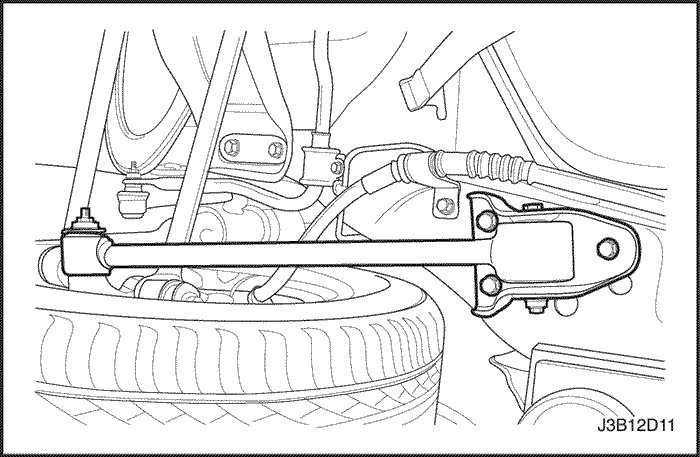
Procedimiento de instalación
- Instalar el acoplamiento de salida trasero.
- Instalar la tuerca y el tornillo del soporte del acoplamiento de salida trasero.
Apretar
Apretar la tuerca del acoplamiento de salida trasero a soporte de acoplamiento de salida a 100 N•m (74 lb-pie).
- Instalar la tuerca del acoplamiento de salida trasero a rótula trasera.
Apretar
Apretar la tuerca del acoplamiento de salida trasero a rótula a 150 N•m (11 lb-pie).
- Descender el vehículo.
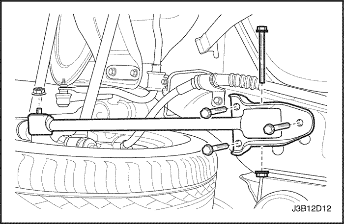
Soporte de acoplamiento de salida
Procedimiento de extracción
- Izar y soportar adecuadamente el vehículo.
- retirar la tuerca y el tornillo del acoplamiento de salida a soporte de acoplamiento de salida.
- Retirar los tornillos de soporte de acoplamiento de salida a carrocería.
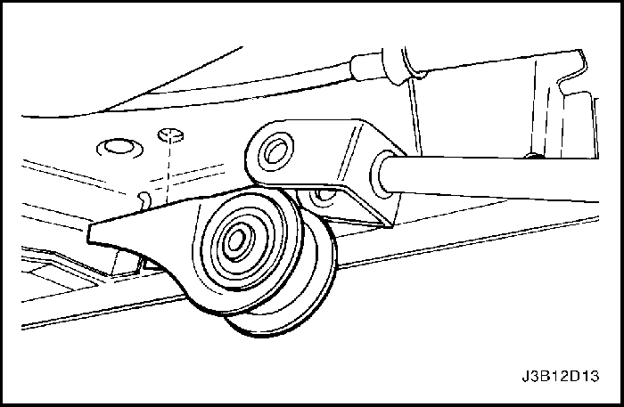
- Retirar el soporte de acoplamiento de salida.
Procedimiento de instalación
- Instalar el soporte de acoplamiento de salida.
- Instalar los tornillos del soporte de acoplamiento de salida a carrocería.
Apretar
Apretar los tornillos del soporte de acoplamiento de salida a carrocería a 70 N•m (52 lb-pie).
- Montar el acoplamiento de salida a soporte de acoplamiento de salida instalando la tuerca y el tornillo del acoplamiento de salida a soporte de acoplamiento de salida.
Apretar
Apretar la tuerca del acoplamiento de salida a soporte de acoplamiento de salida a 100 N•m (74 lb-ft).
- Descender el vehículo.
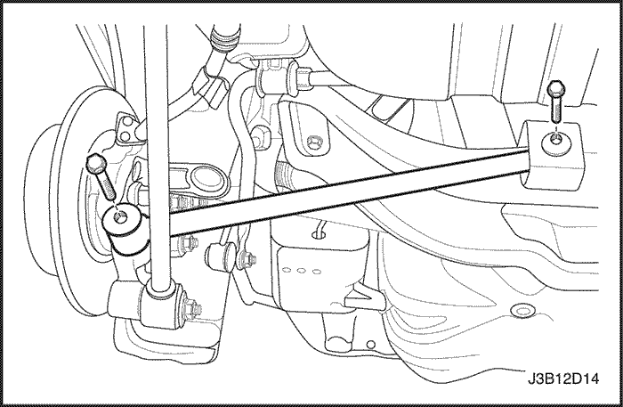
Acoplamiento paralelo delantero
Procedimiento de extracción
- Izar y soportar adecuadamente el vehículo.
- Retirar la rueda. Ver la Sección 2E, Neumáticos y ruedas.
- En vehículos equipados con sistema antibloqueo de frenos, retirar el sensor del ABS de la rótula y el conjunto de la caja del ABS del acoplamiento paralelo delantero.
- Desmontar el tornillo del acoplamiento paralelo delantero del travesaño trasero.
- Desmontar el tornillo del acoplamiento paralelo delantero de la rótula trasera.
- Retirar el acoplamiento paralelo delantero.
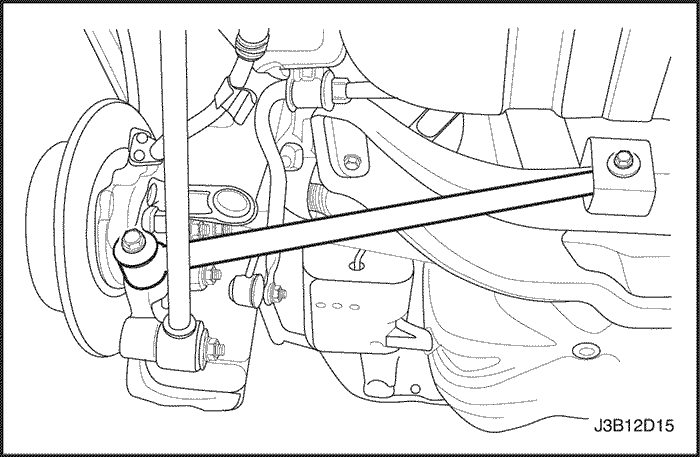
Procedimiento de instalación
- Instalar el acoplamiento paralelo delantero.
- Instalar el acoplamiento paralelo delantero en la rótula trasera con el tornillo.
Apretar
Apretar el tornillo de acoplamiento paralelo delantero a rótula a 120 N•m (89 lb-pie).
- Instalar el acoplamiento paralelo delantero en el travesaño trasero con el tornillo. No apretar.
- En vehículos equipados con sistema antibloqueo de frenos, instalar el conjunto de la caja del ABS en el acoplamiento paralelo delantero y la línea del sensor del ABS en la rótula.
- Instalar la rueda. Ver la Sección 2E, Neumáticos y ruedas.
- Realizar ajuste del ángulo de divergencia trasero. Ver Sección 2B, Calibrado de las ruedas.
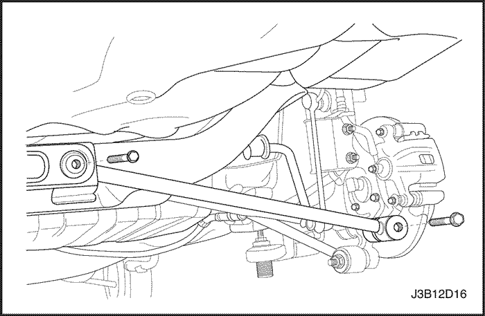
Acoplamiento paralelo trasero
Procedimiento de extracción
- Izar y soportar adecuadamente el vehículo.
- Retirar la rueda. Ver la Sección 2E, Neumáticos y ruedas.
Importante: Antes de quitar el tornillo del acoplamiento paralelo a travesaño, se debe marcar la posición de la leva de ajuste en relación al acoplamiento paralelo y el travesaño. Esta leva de ajuste debe colocarse en la misma posición cuando se instale el acoplamiento paralelo en el vehículo para mantener el ángulo de divergencia trasero correcto.
- Retirar el tornillo del acoplamiento paralelo trasero del travesaño trasero.
- Retirar el tornillo del acoplamiento paralelo trasero de la rótula trasera.
- Retirar el acoplamiento paralelo trasero.
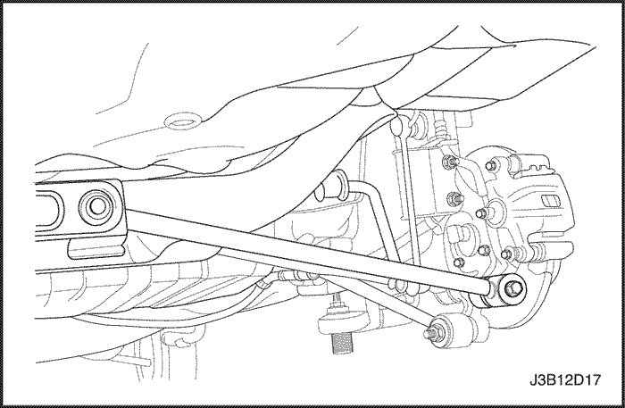
Procedimiento de instalación
- Instalar el acoplamiento paralelo trasero.
- Instalar el tornillo del acoplamiento paralelo trasero a rótula.
Apretar
Apretar el tornillo de acoplamiento paralelo trasero a rótula a 120 N•m (89 lb-ft).
- Instalar el acoplamiento paralelo trasero al travesaño trasero. Instalar los tornillos del acoplamiento paralelo trasero a travesaño.
Apretar
Apretar el tornillo del acoplamiento paralelo trasero a travesaño a 90 N•m (66 lb-pie).
- Instalar la rueda. Ver la Sección 2E, Neumáticos y ruedas.
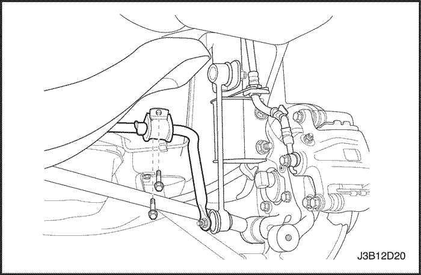
Árbol estabilizador
Procedimiento de extracción
- Izar y soportar adecuadamente el vehículo.
- Retirar los tornillos de la abrazadera del árbol estabilizador.
- Retirar tuerca del árbol estabilizador al acoplamiento estabilizador.
- Retirar del vehículo las abrazaderas del árbol estabilizador, los aisladores y el árbol estabilizador.
Procedimiento de instalación
- Instalar el árbol estabilizador, los aisladores y las abrazaderas del árbol estabilizador.
- Instalar la tuerca de árbol estabilizador al acoplamiento estabilizador.
Apretar
Apretar la tuerca del árbol estabilizador a acoplamiento estabilizador a 47 N•m (35 lb-pie).
- Instalar los tornillos de la abrazadera del árbol estabilizador.
Apretar
Apretar los tornillos de la abrazadera del árbol estabilizador a 40 N•m (30 lb-pie).
- Descender el vehículo.
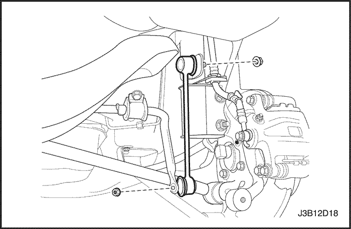
Acoplamiento estabilizador
Procedimiento de extracción
- Izar y soportar adecuadamente el vehículo.
- Retirar la rueda. Ver la Sección 2E, Neumáticos y ruedas.
- Retirar tuerca del árbol estabilizador al acoplamiento estabilizador.
- Retirar la tuerca del acoplamiento estabilizador a conjunto de montante.
- Retirar el acoplamiento estabilizador.
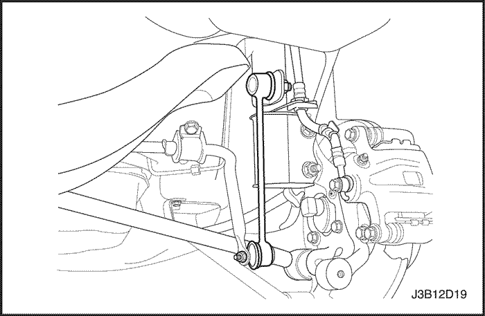
Procedimiento de instalación
- Instalar el acoplamiento estabilizador.
- Instalar la tuerca de acoplamiento estabilizador a conjunto de montante.
Apretar
Apretar la tuerca de acoplamiento estabilizador a conjunto de montante a 47 N•m (35 lb-pie).
- Instalar la tuerca de árbol estabilizador al acoplamiento estabilizador.
Apretar
Apretar la tuerca del árbol estabilizador a acoplamiento estabilizador a 47 N•m (35 lb-pie).
- Instalar la rueda. Ver la Sección 2E, Neumáticos y ruedas.
- Descender el vehículo.
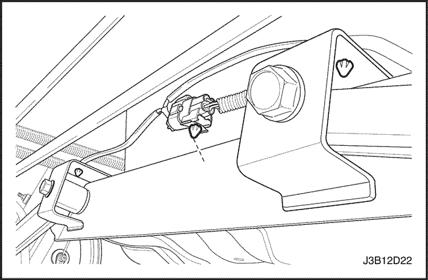
Travesaño
Procedimiento de extracción
- Izar y soportar adecuadamente el vehículo.
- Desmontar el tornillo del acoplamiento paralelo delantero del travesaño. Ver "Acoplamiento paralelo delantero" en esta sección.
- Retirar el tornillo del acoplamiento paralelo trasero del travesaño. Ver "Acoplamiento paralelo trasero" en esta sección.
- Retirar el cableado del sensor de velocidad de la rueda trasera del travesaño.
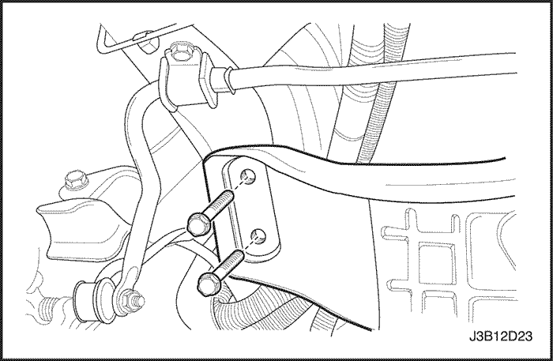
- Retirar lo tornillos de travesaño a carrocería.
- Retirar travesaño.
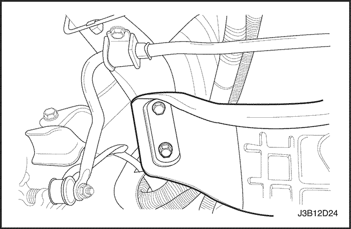
Procedimiento de instalación
- Instalar el travesaño.
- Instalar los tornillos de travesaño a carrocería.
Apretar
Apretar los tornillos de travesaño a carrocería a 112 N•m (83 lb-pie).
- Enrutar e instalar el cableado del sensor de velocidad de la rueda trasera.
- Instalar el acoplamiento paralelo trasero en el travesaño. Ver "Acoplamiento paralelo trasero" en esta sección.
- Instalar el tornillo del acoplamiento paralelo trasero en el travesaño. Ver "Acoplamiento paralelo delantero" en esta sección.
- Descender el vehículo.
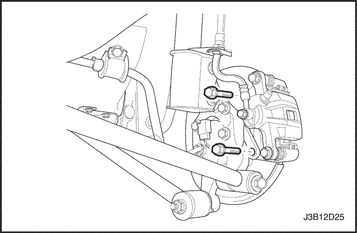
Conjunto de buje y cojinete
Procedimiento de extracción
- Izar y soportar adecuadamente el vehículo.
- Retirar la rueda. Ver la Sección 2E, Neumáticos y ruedas.
- En vehículos equipados con frenos traseros de tambor, retirar el tornillo de sujetamiento del tambor de freno trasero y el tambor. Ver Sección 4E2, Frenos traseros de tambor.
- En vehículos equipados con frenos traseros de disco, retirar la pinza del freno trasero y el disco del freno. Ver la Sección 4E1, Frenos traseros de disco.
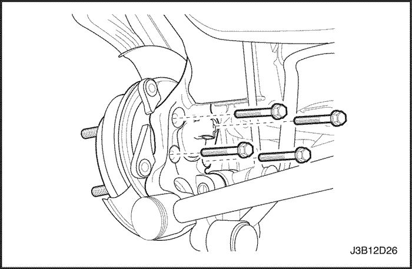
- Retirar los tornillos del buje y el conjunto del buje.
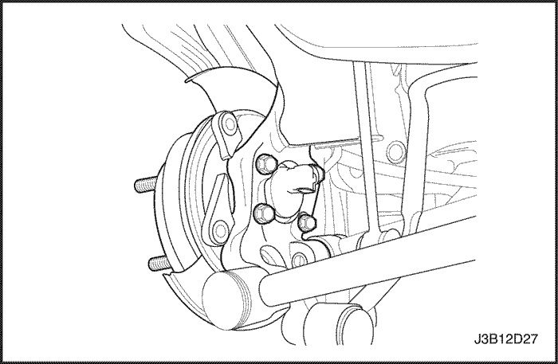
Procedimiento de instalación
- Instalar el conjunto de buje.
Apretar
Apretar los tornillos del conjunto de buje a 65 N•m (48 lb-pie).
- Instalar la tuerca del buje.
- En vehículos equipados con frenos traseros de disco, instalar la pinza del freno trasero y el disco del freno. Ver la Sección 4E1, Frenos traseros de disco.
- En vehículos equipados con frenos traseros de tambor, instalar el tambor y el tornillo de sujetamiento del tambor de freno trasero. Ver Sección 4E2, Frenos traseros de tambor.
- Instalar la rueda. Ver la Sección 2E, Neumáticos y ruedas.
- Descender el vehículo.
REPARACIÓN DE LA UNIDAD
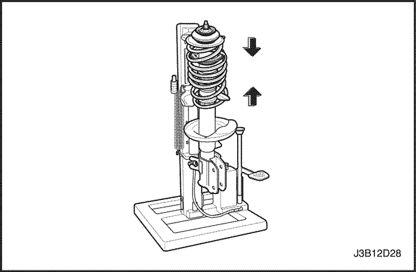
Muelles y aislantes
Herramientas necesarias
Compresor de muelles KM-329-A
Procedimiento de desmontaje
- Retirar el conjunto de montante trasero del vehículo. Ver "Conjunto de montante" en esta sección.
- Montar el conjunto de montante trasero en el muelle compresor (KM-329-A o DW320-010). Asegurarse de que los ganchos están correctamente asentados.
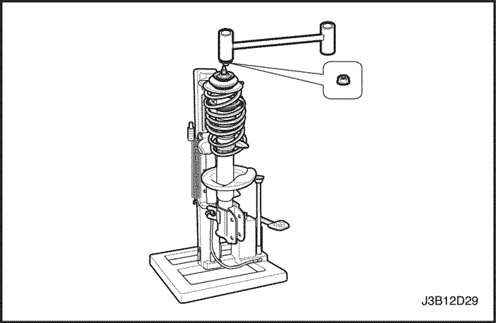
- Comprimir el muelle.
- Retirar la tuerca de bloqueo de la biela del amortiguador de montante.
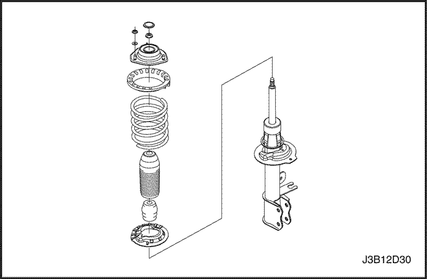
- Retirar el montaje del montante trasero.
- Retirar el asiento superior del muelle trasero, el cubrepolvos y el tope hueco.
- Liberar el muelle.
- Retirar el muelle trasero y el asiento inferior del muelle trasero.
Procedimiento de montaje
- Instalar el asiento inferior del muelle trasero y el muelle trasero.
- Comprimir el muelle.
- Instalar el asiento superior del muelle trasero, el cubrepolvos y el tope hueco.
- Instalar el montaje del montante trasero.
- Instalar la contratuerca en la biela del amortiguador de montante.
Apretar
Apretar las tuercas de articulación esférica a brazo de control a 100 N•m (74 lb-pie). Apretar la tuerca de amortiguador de montante a montaje de montante a 75 N•m (55 lb-pie).
- Liberar el muelle.
- Retirar el conjunto de montante del compresor de muelle e instalar el conjunto de montante en el vehículo. Ver "Conjunto de montante" en esta sección.
Rótula
Procedimiento de desmontaje
- Retirar la rótula del vehículo. Ver "Conjunto de rótula" en esta sección.
- Retirar el tambor de freno. Ver Sección 4E2, Frenos traseros de tambor.
- Retirar el buje de la rueda. Ver "Buje y conjunto de cojinete" en esta sección.
- En vehículos equipados con frenos traseros de tambor, retirar el conjunto del freno de tambor trasero. En vehículos equipados con frenos traseros de disco, retirar el conjunto de freno de disco. Ver la Sección 4E1, Frenos traseros de disco.
- Retirar la protección de salpicaduras de frenos. Ver Sección 4E2, Frenos traseros de tambor.
Procedimiento de montaje
- Instalar la protección de salpicaduras de frenos. Ver la Sección 4E1, Frenos traseros de disco.
- En vehículos equipados con frenos traseros de tambor, instalar el conjunto del freno de tambor trasero. En vehículos equipados con frenos traseros de disco, instalar el conjunto de freno de disco. Ver la Sección 4E1, Frenos traseros de disco.
- Instalar el buje de la rueda. Ver "Buje y conjunto de cojinete" en esta sección.
- Instalar la pinza de freno y el rotor de freno o el tambor de freno. Ver Sección 4E1, Frenos traseros de disco y 4E2, Frenos traseros de tambor.
- Instalar la rótula en el vehículo. Ver "Conjunto de rótula" en esta sección.
Buje y cojinete
El cojinete del buje no puede ser reparado en el servicio. Si el cojinete de buje está defectuoso, debe reemplazarse el conjunto de buje y cojinete.
DESCRIPCIÓN GENERAL Y FUNCIONAMIENTO DEL SISTEMA
Suspensión trasera
La suspensión trasera es totalmente independiente y consiste de un travesaño con cuatro acoplamientos paralelos, dos acoplamientos de salida, dos conjuntos de montante con muelles de bobina y aisladores y dos rótulas que contienen los conjuntos de buje y cojinete. Los conjuntos de montante soportan el peso del vehículo usando muelles de bobina posicionados alrededor de los amortiguadores de montante. Los muelles de bobina se asientan sobre aisladores acoplados al montaje superior y al asiento inferior del muelle del conjunto de montante. Los acoplamientos paralelos y el soporte del acoplamiento de salida tienen bujes aisladores de caucho en cada extremo y están acoplados al travesaño y a la rótula. El acoplamiento paralelo trasero está acoplado al travesaño a través de levas de ajuste que se utilizan para ajustar el ángulo de divergencia trasero. Los acoplamientos de salida están acoplados a la carrocería, a través del soporte del acoplamiento de salida y a la parte inferior de la rótula. Una rótula forjada se sujeta con tornillos a cada conjunto de montante. El movimiento lateral de la rótula está controlado por los acoplamientos paralelos. El movimiento hacia delante y hacia atrás de la rótula está controlado por el acoplamiento de salida.